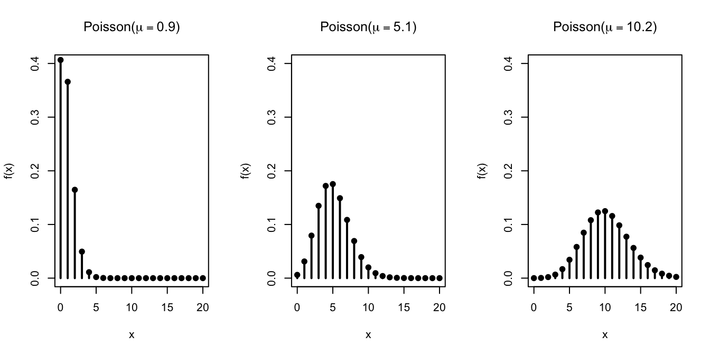

Lesson 16 Poisson Distribution
Motivating Example
You are in a room of \(n\) people (including yourself). Each person in the room has contributed $1 to a central pot, so there is a total of $\(n\) in the pot. The money in the pot will be redistributed back to the people in the room, in the following way: each dollar is equally likely to go to any one of the \(n\) people, independently of the other dollars in the pot. This means that some people could get more than $1, while others end up with nothing.
As \(n\to\infty\), what is the probability that you end up with no money? There are two common schools of thought:
- As \(n\to\infty\), the number of dollars in the pot increases to infinity, so it seems that the probability that you end up with at least one of those dollars should approach \(1\), i.e., the probability that you end up with no money approaches 0.
- As \(n\to\infty\), the chance that you earn each dollar, \(1/n\), decreases to 0, so it seems that the probability that you end up with no money approaches 1.
Which school of thought is correct? As it turns out, both arguments are wrong. Let’s see why.
We can model the number of dollars you get as the number of \(\fbox{1}\)s in \(n\) draws, with replacement, from the box \[ \overbrace{\fbox{1}\ \underbrace{\fbox{0}\ \ldots\ \fbox{0}}_{n-1}}^{n}. \] (Each ticket in the box represents a person in the room. Each draw represents a dollar, and you only get that dollar if your name is drawn.)
This is exactly the description of a \(\text{Binomial}(n, p=\frac{1}{n})\) distribution. So the probability that you end up with no money is \[\begin{align*} f(0) &= \binom{n}{0} \left( \frac{1}{n} \right)^{0} \left( 1 - \frac{1}{n} \right)^{n} \\ &= \left(1 - \frac{1}{n} \right)^n. \end{align*}\] What is the limit of this probability as \(n\to\infty\)? Try plugging in some very large numbers for \(n\) into the expression above. You will see that the probability is nowhere near 0 or 1. But what is it approaching?
This is a very famous limit in mathematics. In case you are not familiar with it, take the (natural) logarithm to bring the \(n\) down from the exponent, and apply L’Hôpital’s Rule: \[\begin{align*} \lim_{n\to\infty} \log \left(1 - \frac{1}{n} \right)^n &= \lim_{n\to\infty} n \log \left(1 - \frac{1}{n} \right) & \text{(Property of logs: $\log b^a = a \log b$)} \\ &= \lim_{x \to 0} \frac{\log \left(1 - x \right)}{x} & \text{(Let $x = 1/n$.)} \\ &= \lim_{x \to 0} \frac{\frac{d}{dx} \log \left(1 - x \right)}{\frac{d}{dx} x} & \text{(L'Hôpital's Rule on $0/0$ indeterminate form)} \\ &= \lim_{x \to 0} \frac{-\frac{1}{1 - x}}{1} & \text{(Remember your derivatives?)} \\ &= -1. \end{align*}\] Remember that \(-1\) is the limit of the logarithm, so to obtain the limit of the original expression, we need to “undo” the logarithm, i.e., exponentiate: \[\begin{equation} \lim_{n\to\infty} \left(1 - \frac{1}{n} \right)^n = e^{-1}. \tag{16.1} \end{equation}\] So the probability that you end up with no money approaches \(1/e \approx 0.368\) as \(n\to\infty\).
Theory
The motivating example above illustrates a general phenomenon. A binomial distribution with large \(n\) and small \(p\) can be approximated by a p.m.f. involving the constant \(e\). The next theorem makes this precise.
Even when the data does not originate from a binomial model, it is common to assume that count data follow a Poisson distribution. In the next example, we are explicitly told that the random variable follows a Poisson distribution.
Why might the Poisson distribution be a reasonable model for the number of typos?
- Each op-ed has many words (e.g., \(n = 1000\)).
- There is a small probability that each word has a typo (e.g., \(p = .0046\)).
- If typos are independent across words, then the number of typos follows a binomial distribution.
- Since \(n\) is large and \(p\) is small, this binomial distribution can be approximated by a \(\text{Poisson}(\mu=np=4.6)\) distribution.
However, all of this is conjecture. We are not told how many words the op-ed has, nor the probability that each word has a typo. We simply assume that the number of typos follows a Poisson distribution. In practice, the Poisson model is often used for count data, even when there is no underlying binomial model.
Finally, we include the proof of Theorem 16.1 for completeness. This proof is not particularly interesting or insightful, so you do not need to know it.
Visualizing the Distribution
Let’s graph the Poisson distribution for different values of \(\mu\).

The probability mass shifts to the right as \(\mu\) increases. This makes sense if we interpret the Poisson distribution as an approximation to the binomial, where \(\mu=np\). To increase \(\mu\), we must either increase \(n\) or \(p\), both of which tend to increase the number of \(\fbox{1}\)s that we draw.
Calculating Poisson Probabilities on the Computer
The Poisson distribution is built into many software packages.
Example 16.3 (Disk Failures at a Data Center) A data center has 10,000 disk drives. Suppose that a disk drive fails in a given day with probability \(10^{-3}\).
- What is the probability that there are 12 or more disk failures tomorrow?
- How many spare disk drives should be available so that all failures in a day can be replaced with probability 99%?
Solution. First, we will set up a box model for the number of disk failures. We have a box with
- \(N_0 = 999\) tickets labeled \(\fbox{0}\)
- \(N_1 = 1\) tickets labeled \(\fbox{1}\)
to represent the \(10^{-3}\) probability of failure. We will draw 10,000 tickets from this box, with replacement, to represent whether each of the 10,000 disks fails.
This shows that the number of failures, which we will call \(X\), follows a \(\text{Binomial}(n=10^4, p=10^{-3})\) distribution. We can calculate the exact probabilities using this binomial distribution or approximate probabilities using a \(\text{Poisson}(\mu=np=10)\) distribution.
Either way, we will want to calculate the probabilities at a computer. For example, the quickest way to calculating \(P(X \geq 12)\) still requires calculating \[ 1 - f(0) - f(1) - f(2) - \ldots - f(11), \] which is not something we want to do by hand.Here’s how we would calculate the probability using the Python library Symbulate.
from symbulate import *
probs = Poisson(10).pmf(
range(12) # range(12) is [0, 1, 2, ..., 11]
)
1 - sum(probs)## 0.303223853696892Alternatively, we could also calculate this using the c.d.f. and the complement rule. This time, let’s compare the approximate answer that we get from the Poisson distribution with the exact answer that we get from the binomial distribution.
## (0.30322385369689386, 0.30316693332735856)Very close indeed!
The second question can be addressed by trial and error. We want to figure out the value \(c\) such that \(F(c) = P(X \leq c) = .99\). From above, we already know that \(F(11) \approx 0.70\), so we can start trying values from \(c=12\). The simple script below increases \(x\) by \(1\) until the cumulative probability crosses \(.99\).
x = 12
while Poisson(10).cdf(x) < .99:
x += 1
# print out the value of x and the probability
x, Poisson(10).cdf(x)## (18, 0.9928134953961456)You can play around with the Python code in this Colab notebook.
It is also possible to do this calculation in R, a statistical programming language.
## [1] 0.3032239We can also use the c.d.f. function:
## [1] 0.3032239The second question can be addressed by trial and error. We want to figure out the value \(c\) such that \(F(c) = P(X \leq c) = .99\). From above, we already know that \(F(11) \approx 0.70\), so we can start trying values from \(c=12\). The simple script below increases \(x\) by \(1\) until the c.d.f. crosses \(.99\).
x <- 12
while(ppois(x, 10) < .99) {
x <- x + 1
}
# print out the value of x and the probability
c(x, ppois(x, 10))## [1] 18.0000000 0.9928135You can play around with the R code in this Colab notebook.
Essential Practice
If you buy a lottery ticket in 50 lotteries, in each of which your chances of winning a prize of \(1/100\), what is the probability that you will win a prize:
- at least once?
- exactly twice?
- at least twice?
Calculate both the exact probabilities (using the binomial distribution) and the approximate probabilities (using the Poisson distribution).
The number of organisms in \(V\) cubic meters of ballast water discharged from a ship follows a \(\text{Poisson}(\mu=10 V)\) distribution. (See “Counting at Low Concentrations: The Statistical Challenges of Verifying Ballast Water Discharge Standards”, Ecological Applications, 2013:339–351.)
- What is the probability that there are at least 12 organisms in 1.5 cubic meters of discharge?
- For what amount of discharge would the probability of containing at least one organism be .999?
Thelma calculates the exact probability of winning more than 50% of the time when she places 1000 bets on red in roulette. Louise calculates an approximate probability using the Poisson distribution. They get very different answers. What answers did they get, and why did the Poisson approximation fail in this case?